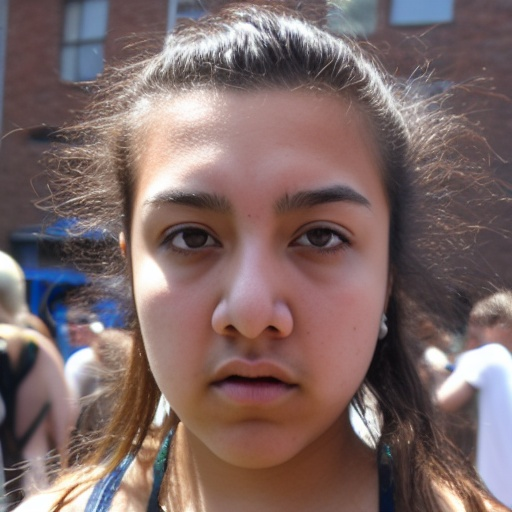
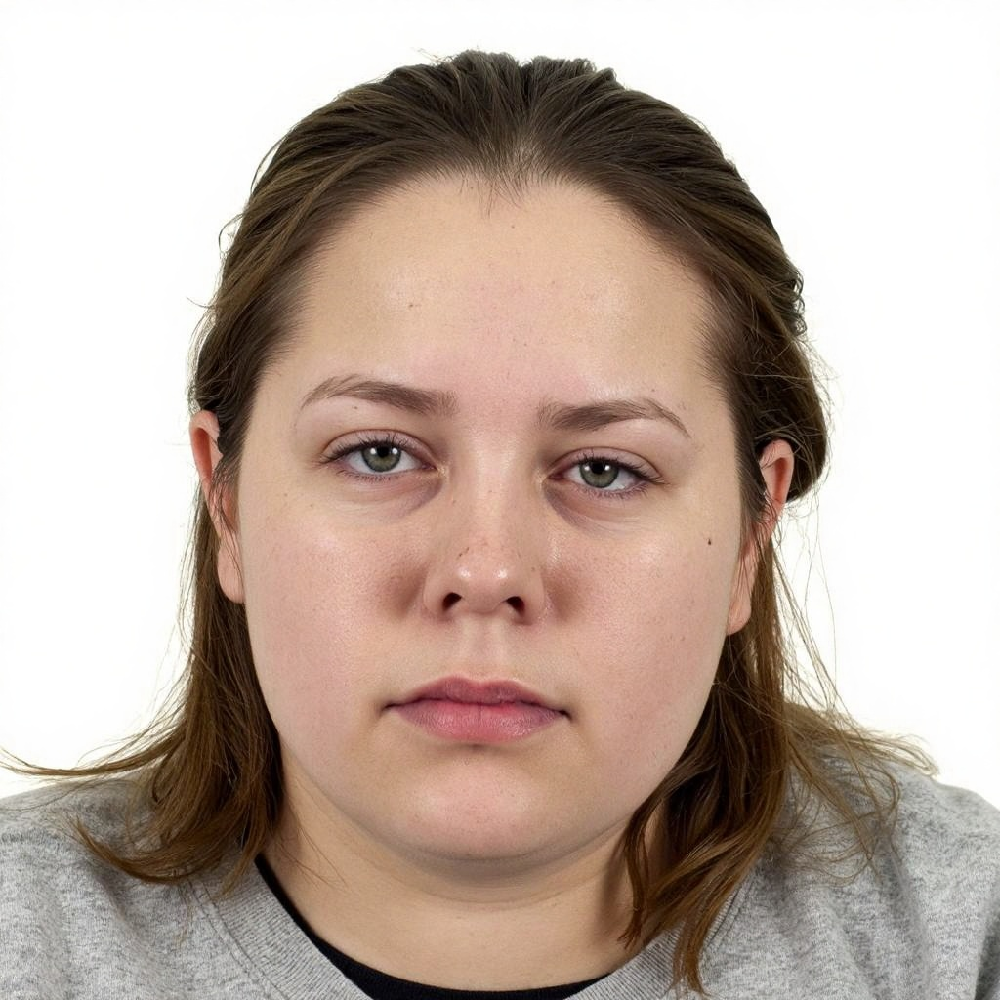
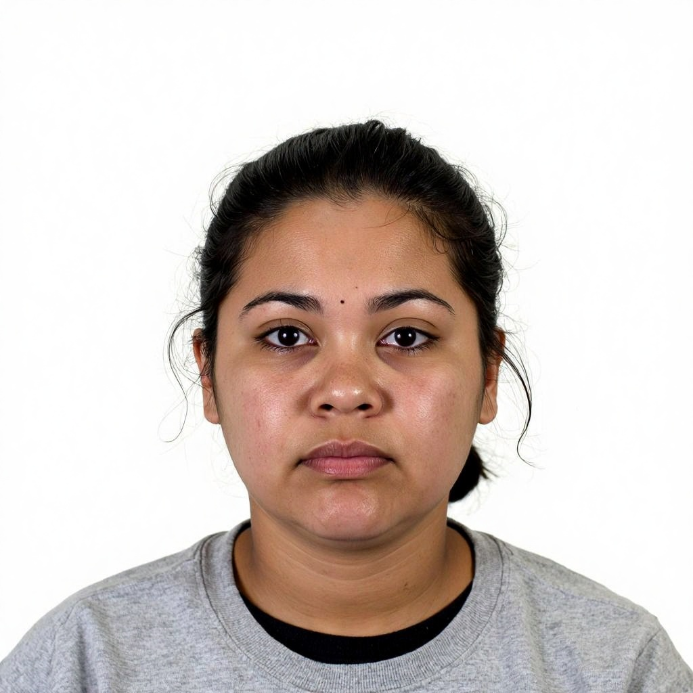
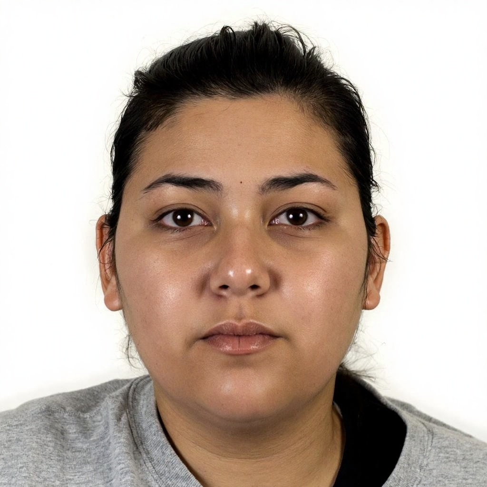
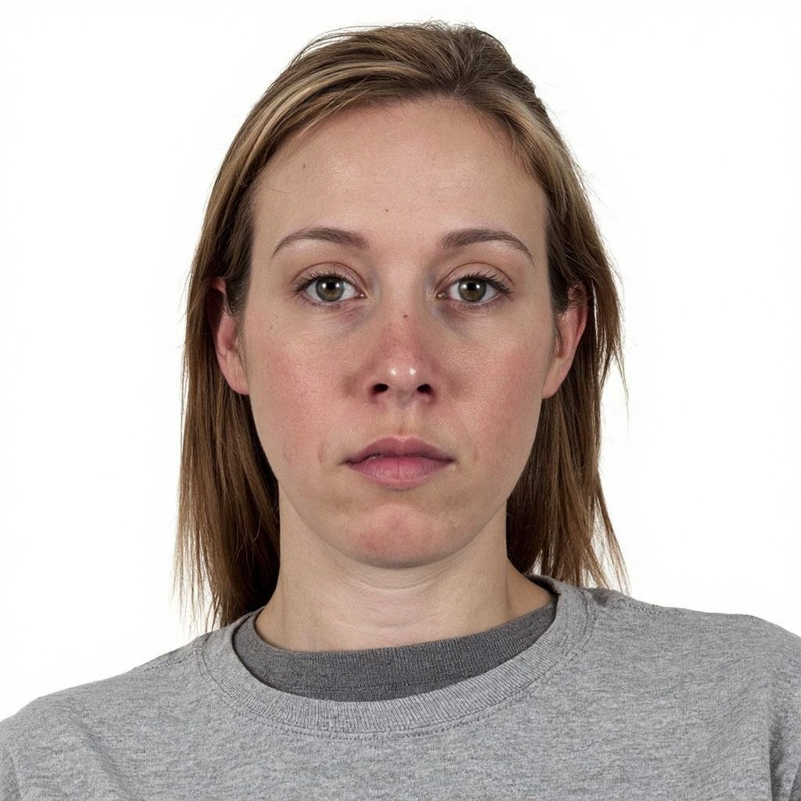
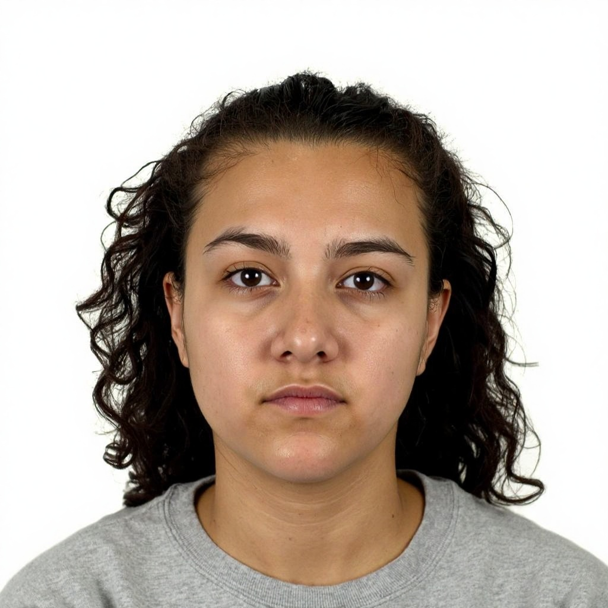

Toplam Deneme
157
Canlı
Doğrulanan
132
%84.1
İnceleme Gerekli
18
%11.5
İşaretli / Reddedildi
7
%4.4
Kayıt Yok
4
%2.5
1
Öğrenci Ekranı (Canlı)
CANLIDoğrulama tamamlandı

CANLI
Yüz doğrulandı
Lütfen sabit durun…
Kameraİyi
Aydınlatmaİyi
CanlılıkYüksek
Spoof TespitiDüşük Risk
Neden yüzümüzü doğruluyoruz?
Kimliğinizi doğrulamak ve sınav güvenliğini sağlamak için gelişmiş yapay zeka kullanıyoruz.
Canlı Aktivite Özeti
Tüm Günlüğü Gör
3020100
09:4009:5010:0010:1010:2010:24
- Doğrulanan (son 10 dk)23
- İnceleme Gerekli (son 10 dk)3
- İşaretlenen (son 10 dk)1
2
Doğrulama Kuyruğu
İnceleme gerektiren gerçek zamanlı denemeler
Öncelik:
| Öğrenci | Sınav | Eşleşme Skoru | Öncelik | Zaman | İşlem |
|---|---|---|---|---|---|
|
Aylin KayaAT-2026-1042
|
Ara Sınav | 92% | İnceleme | 10:24 AM | |
|
 Elif BayarAT-2026-1053
|
Ara Sınav | 72% | İnceleme | 10:23 AM | |
|
 Sofia MartinezAT-2026-1061
|
Ara Sınav | 65% | İnceleme | 10:22 AM | |
|
 Nora WalkerAT-2026-1045
|
Ara Sınav | 41% | İşaretli | 10:21 AM | |
|
 Isabella RossiAT-2026-1066
|
Ara Sınav | 38% | İşaretli | 10:20 AM |
18 kayıttan 1 - 5 arası gösteriliyor
3
Seçili Deneme Detayları
Deneme ID: ATT-2026-78451
Aylin Kaya
AT-2026-1042
Ara Sınav
Eşleşme Skoru
92%
Yüksek Eşleşme
Eşik
0.300
Deneme Zamanı
10:24:18 AM
20 May 2025
Güven Seviyesi
Yüksek

Kısayollar:
A Onayla
D Reddet
N Sonraki
M Daha Sonra